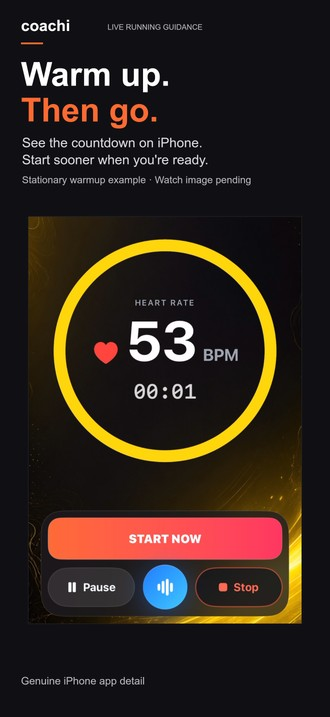
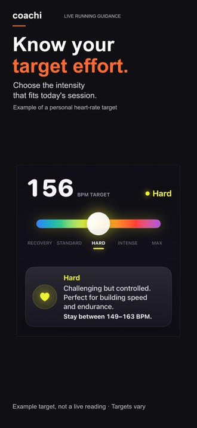
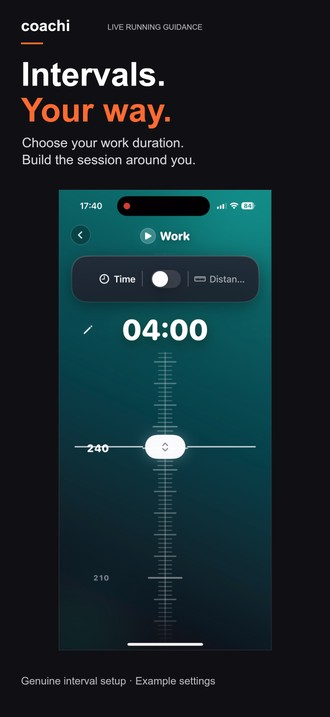

App Store creative collection
Two pages.
Real product proof.
Reusing the recent ads, CTA sources and Target Run footage. Old screenshot cards are excluded. Pick a page, compare the story, then open any card at its full export size.
Proposed first images, clear Coachi+ value, exact missing captures and a controlled test plan. This is a storyboard—not seven new app screenshots.
Refined studio-lit hardware with genuine app screens. The original flat exports below remain unchanged.
Guided runs
Easy-run, recovery and everyday-run traffic. Recovery ad is a candidate match, not a demonstrated conversion winner.


Watch-connected coaching
Watch-data-to-guidance traffic. Apple Watch-specific artwork is held until a current native Watch capture exists; no Garmin photo is presented as Apple Watch.



18 screenshot exports at 1320×2868, English/Norwegian copy, and 16 curated genuine sources. Current native Apple Watch, active conversational-coach and higher-resolution result captures are still needed for a stronger final package. No synthetic watch screen stands in for missing evidence.